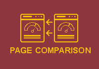
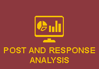

Pages



CIT - UNIVERSITY FACEBOOK ANALYZER
CUFA or CIT-University Facebook Analyzer is a web application that could retrieve data from the official Cebu Institute of Technology University Facebook pages and analyze the data of the specific Facebook pages. The web application features a dashboard that will display the key performance indicators from the Facebook page that is used by the Facebook page admin to show and determine the Facebook page’s performance and how individuals interact with their pages in general.